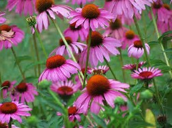

CONEFLOWERS
By the middle of August, the flower petals will fall off, the stems will turn dark and brittle, the center cone has produced seeds.

- You can cut off the cones and toss them down into the same area of the flower garden; so, they will come back again next year.
- You can cut off the cones and toss them down into a different garden area; so, they will grow there next year.
- You can also harvest seed to keep for next year as follows:
- Snip the stems, 8-12 inches below the cones. The cones need time to dry so they will drop the seeds. Place the stems, with the cones on them upside-down in a paper bag, in a warm dry place.
- By October, the darkened tips have fallen off, leaving the coneflower seeds with chaff (seed covering). Take the seeds off the cone and place on newspaper or paper towels for a few days to finish drying.
- Store the dried seeds, in a sealed plastic bag, in the freezer, until spring. Or place the dried seeds, in an envelope, until spring.
- Pull the remaining part of the coneflower plants and throw away.
Go to Home Page